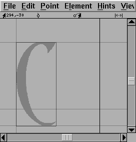
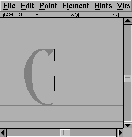
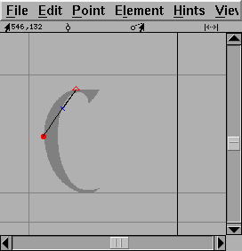
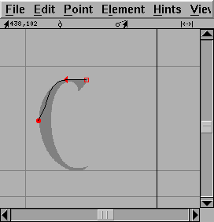
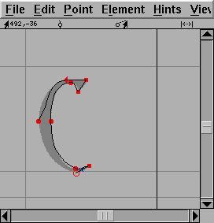
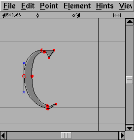
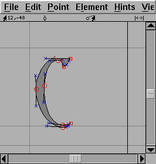
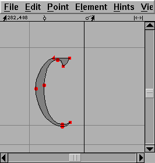

Tutorial
I shall not presume to teach aesthetics, I concentrate solely on the mechanics here.
- Font Creation
- Creating a character (tracing outlines)
- Navigating to other characters
- On to the next character (consistent directions)
- Consistent serifs and stem widths
- Building accented characters
- Building a ligature
- Examining metrics
- Kerning
- Anchoring marks
- Character variants
- Checking your font
- Generating it
- Font Families
- Final Summary
- Notes on various scripts
- FontForge and TeX
If you wish to follow along with the tutorial, this bundle should provide you with the basic files you need.
Font creation
First create a new font with the New command in the
File menu (or by using the -new argument at startup).

Give the font a name with the Font
Info command from the Element menu. You use this
same command to change the encoding (ie what characters are available in
the font), set the copyright message and change the ascent and descent (the
sum of these two determines the size of the em square for the font, and by
convention is 1000 for postscript fonts, a power of two (often 2048 or 4096)
for truetype fonts and 15,000 for Ikarus fonts).

Creating a character
Once you have done that you are ready to start editing characters. Double click on the entry for "C" in the font view above. You should now have an empty Outline Character window:

Select the Import command from the File menu and import an image of the character you are creating. It will be scaled so that it is as high as the em-square.

Select the background layer as editable from the layers palette, move the mouse pointer to one of the edges of the image, hold down the shift key, depress and drag the corner until the image is a reasonable size, then move the pointer onto the dark part of the image, depress the mouse and drag until the image is properly positioned.

If you have downloaded the
autotrace program
you can invoke Element->AutoTrace to generate an outline
from the image. But if you have not you must add points yourself. Change
the active layer to be the foreground, and go to the tools palette and select
the round (or curve) point. Then move the pointer to the edge of the image
and add a point. I find that it is best to add points at places where the
curve is horizontal or vertical, at corners, or where the curve changes
inflection (A change of inflection occurs in a curve like "S" where the curve
changes from being open to the left to being open on the right. If you follow
these rules hinting will work better.

It is best to enter a curve in a clockwise fashion, so the next point should be added up at the top of the image on the flat section. Because the shape becomes flat here, a curve point is not appropriate, rather a tangent point is (this looks like a little triangle on the tools palette). A tangent point makes a nice transition from curves to straight lines because the curve leaves the point with the same slope the line had when it entered.

At the moment this "curve" doesn't match the image at all, don't worry about that we'll fix it later, and anyway it will change on its own as we continue. Note that we now have a control point attached to the tangent point (the little blue x). The next point needs to go where the image changes direction abruptly. Neither a curve nor a tangent point is appropriate here, instead we must use a corner point (one of the little squares on the tools palette).

As you see the old curve now follows the image a bit more closely. We continue adding points until we are ready to close the path.

Then we close the path just by adding a new point on top of the old start point

Now we must make the curve track the image more closely, to do this we must adjust the control points (the blue "x"es). To make all the control points visible select the pointer tool and double-click on the curve and then move the control points around until the curve looks right.

Finally we set width. Again with the pointer tool, move the mouse to the width line on the right edge of the screen, depress and drag the line back to a reasonable location.

And we are done with this character.
Well sort of. If you are like me you didn't get everything quite right even though you checked. You can use Element->Find Problems... to check for simple mistakes (like having your vertical lines be slightly skewed).
You can use View->Next Char and View->Prev Char
to look at additional characters.
Most modern fonts will contain accented characters. Accented characters are easy to make once you have made the accents and base characters they depend on. For example if you have created the "C" character and the "cedilla" then you can scroll the font view until you can see the "Ccedilla" character, then select it and use Element->Build Accented Char to create the accented glyph.
Of course you can also do this manually. Another way is to select the "C" character and do Edit->Copy Reference, then select the "Ccedilla" character and Edit->Paste, select the "cedilla" character and Edit->Copy Reference, select the "Ccedilla" character again, and open it up by double clicking on it, and then doing Edit->Paste. You will probably have to adjust the cedilla until it snuggles properly under the C.
When you have created all your accents you have created your first font.
One of the hardest tasks of all is getting to spaces around the characters
to look nice. FontForge has a
Metrics->Auto Width
command which attempts to guess reasonable values for the character spacings
in your font. Just select the "All" radio button in both sets of buttons
and press OK.

At this point you might want some bitmaps to go with the postscript (this
is not compulsory). Go to Element->Bitmaps Available and
select the pixel sizes you want bitmaps in (Note, that on X and MS windows
pixel sizes often do not correspond exactly to point sizes. You can then
use the bitmap editor (File->Open Bitmap) to clean up the
bitmaps, or you can generate your bitmap fonts and then
use someone else's
bitmap editor to clean them up.

Last of all you can generate font files. Select File->Generate
Fonts, select the outline font format, and which (if any) of your
bitmaps you want converted into a bitmap font.